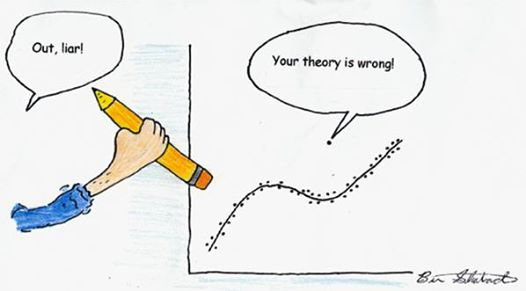

11 Les facteurs qui influencent les résultats
11.1 Les valeurs influentes en un dessin

11.1.1 Aspects théoriques
Une valeur influente est une observation qui est statistiquement loin des normes de son groupe (Jarrell, 1994). Cette définition est cependant insuffisante car il ne suffit pas qu’elle soit éloignée des normes de son groupe, il faut aussi que cette observation dévie tellement des autres observations que cela doit amener à suspecter que cette observation a été créée à partir d’autres mécanismes que ceux qui sont examinés (Hawkins, 1980). Néanmoins, quand on a un très gros échantillon, c’est tout à fait normal que certaines observations s’éloignent énormément des normes du groupe. Ainsi, pour effectivement être considérée comme influente, cette observation inhabituelle doit survenir avec une fréquence supérieure à celle qu’on devrait obtenir en raison du hasard (Wainer, 1976).
Le chapitre s’appelle “valeurs influentes” mais aurait pu s’apeller “valeurs aberrantes”. Néanmoins, ces deux notions ne renvoient pas exactement à la même chose et cette distinction existe depuis les années 1980 (Belsley et al., 1980), voire avant (Cook, 1977).
Concrètement, une valeur aberrante est une valeur qui est illégitime : si on s’intéresse à la vitesse de réaction des enfants de 4 ans et qu’un adulte participe à l’expérience, cette valeur est aberrante. Dans cet exemple, on peut imaginer qu’un adulte soit plus rapide qu’un enfant de 4 ans. Ainsi, on peut imaginer que cette observation va également influencer les résultats. Cependant, si on s’intéresse aux pratiques médicales chez les médecins français, et qu’un médecin suisse ou belge participe à l’étude, cette observation va être aberrante (puisque, quand on est suisse, on n’est pas français et l’étude porte sur les pratiques en France), mais on peut imaginer que les pratiques sont sensiblement les mêmes, ce qui ne rendra pas cette observation atypique. Dans ce dernier cas, l’observation est aberrante car illégitime mais pas influente. On peut également être confronté au cas contraire : une observation influente mais légitime. Ainsi, on pourrait avoir un enfant de 4 ans qui réagit beaucoup plus vite que les autres. Dans les exemples les plus médiatisés de ces valeurs influentes légitime, on a chaque année le record de précocité pour le BAC qui est annoncé dans les journaux. Ainsi, si on s’intéresse à l’âge d’entrée à l’université et que, dans notre échantillon, on a une personne comme Terence Tao qui suit une formation universitaire dès l’âge de 9 ans, ça va influencer les résultats mais la valeur est légitime même si hautement atypiqe.
On pourrait rajouter dans cette distinction une troisième concept qui est l’effet de levier de l’observation (Chatterjee & Hadi, 1986) : dans certaines analyses - et nous l’évoquerons dans le chapitre sur les corrélations et dans celui sur les régressions plus en détail -, une observation peut apparaître comme influente sans que cela n’influence réellement les résultats. concrètement, sur le graphique, on voit que l’observation ne se comporte pas comme les autres mais, si on supprime cette observation, les résultats ne vont pratiquement pas changer. La raison de ce phénomène est que l’effet de levier de l’observation est faible. On peut également avoir la situation contraire : des observations qui semblent cohérente avec le modèle mais dont la suppression modifie considérablement les résultats. Dans ce cas, leur effet de levier est important.
D’un point de vue statistique, on peut mesurer si une observation est influente ou non ; on peut également mesurer son effet de levier. En revanche, c’est le bon sens plutôt que les statistiques qui permettent de savoir si l’observation est légitime ou non, même si ce bon sens peut nous amener à nous tromper. Si on reprend l’exemple de Terence Tao, si on analyse les données sans avoir vu les participants, on pourrait assez naturellement se dire, qu’il y a eu une erreur d’encodage et que l’âge est de 19 ans au lieu de 9 ans15. Dès lors, le choix d’appeler le chapitre “valeurs influentes” plutôt que “valeurs aberrantes” s’explique par le fait qu’on peut identifier des valeurs influentes d’un point de vue statistiques, alors que, d’un point de vue purement statistique, une valeur aberrante n’est pas identifiable en soi.
Dans un article intitulé “La puissance des outliers et les raisons pour lesquelles vous devriez toujours vérifier s’il y en a”, Osborne et Overbay (2004) reprennent un ensemble d’éléments qui permettent de comprendre ce qu’est une valeur influente, et les raisons pour lesquelles les ignorer a des conséquences dramatiques, à la fois sur l’estimation des paramètres, mais surtout sur la validité externe de l’étude qui a été menée (Carter et al., 2009).
11.2 Quelles sont les conséquences des valeurs influentes d’un point de vue statistique
réduction de la puissance par l’augmentation de la variance ;
distorsion de la distribution qui ne suit plus une distribution normale, impliquant qu’on ne contrôle plus les erreurs ;
biais dans l’estimation des paramètres.
Pour illustrer ces trois conséquences, regardez les valeurs suivantes :
c(2,3,4,5,6,100)->outlier
outlier## [1] 2 3 4 5 6 100Intuitivement, on imagine que la moyenne doit être comprise entre 2 et 6 et en aucune manière au-dessus de 10 ; de la même manière, on imagine que l’écart-type doit être aux alentours de 1 En effet, puisque 95% des observations sont comprises entre -2 et +2 écart-type autour de la moyenne, il est raisonnable de se dire que la moyenne pourrait être à 4. La valeur la plus faible étant 2, on peut trouver l’écart-type en faisant (formule 1) :
\[\frac{\bar{x} - minimum}{nombre\ d'écart-types\ pour\ un\ IC\ à\ 0.95}\] Formule 1. Estimation grossière de la valeur d’un écart-type à partir d’un jeu de données
Concrètement, en l’occurrence, cela donnerait ce qui est présenté pour la Formule 2. \[\frac{4-2}{2}=1\] Formule 2. Estimation grossière de la valeur d’un écart-type des données ‘outlier’
Pourtant, lorsqu’on estime la moyenne et l’écart-type des données ci-dessus, on obtient :
mean(outlier)## [1] 20
sd(outlier)## [1] 39.2173411.3 Quelle est la cause des valeurs influentes ?
Il existe deux types de valeurs influentes :
les valeurs influentes provenant de l’introduction d’erreurs dans les données ;
les valeurs influentes provenant de la variabilité dans la population.
Dans le premier cas, la valeur est dite illégitime et dans le second cas, elle est considérée comme légitime. Il faut néanmoins avoir à l’esprit qu’une valeur illégitime peut ne pas contaminer les données (et donc ne pas être détectée) tandis qu’une valeur légitime peut influencer les résultats de manière importante, et donc être détectée comme valeur influente.
11.3.1 Les valeurs influentes dues à des erreurs
L’origine de l’erreur peut être multiple. Par exemple, l’erreur peut provenir d’une erreur de codage lors de la récolte de données. Par exemple, si on s’intéresse au salaire horaire des infirmières, il semble invraisemblable qu’une infirmière puisse gagner 42000$ de l’heure. Cette erreur peut être corrigée. Si on ne peut pas corriger l’erreur, il s’agit d’une valeur qui n’est pas valide pour représenter la population et elle doit être supprimée.
Il arrive également que des participants reportent volontairement des erreurs, pour saboter de manière volontaire l’étude, ou pour d’autres motifs tel que de la désirabilité sociale. Par exemple, il est intéressant de constater qu’un sondage portant sur le nombre de partenaires sexuels qu’ont eu des Français hétérosexuels est différent entre les hommes et les femmes. Ainsi, une étude IPSOS de 2015 aboutit à la conclusion que les Français ont en moyenne 9.5 partenaires sexuels différents, avec une moyenne de 11 partenaires chez les hommes et de 8 chez les femmes (https://www.ipsos.com/fr-fr/que-feraient-les-francais-pour-pimenter-leur-vie-sexuelle). Il semblerait que personne chez IPSOS ne se soit demandé comment c’est possible. En effet, imaginons qu’en moyenne, les hommes aient une relation sexuelle avec 3 femmes différentes. Si nous prenons 3 hommes qui ont une relation avec 3 femmes, on obtient le schéma présenté en Figure 2.

On se rend compte qu’il est impossible qu’en moyenne les hommes hétérosexuels aient plus de partenaires que les femmes hétérosexuelles. Alors, comment expliquer simplement ce phénomène ? Tout simplement par le fait qu’un homme a tout intérêt à grossir le nombre de partenaires sexuels puisque c’est valorisé chez les hommes (i.e., c’est un Don Juan) alors que les femmes ont intérêt à diminuer ce nombre car avoir des relations avec trop d’hommes va (encore à l’heure actuelle) être mal perçu (i.e., c’est une fille facile).
Il arrive également que les situations environnementales influencent la réponse des participants. Par exemple, si vous vous intéressé à la répartition des tâches ménagères au sein des couples, en particulier à la manière dont les hommes envisagent cette répartition des tâches. Il est tout à fait probable qu’un même homme n’aura pas la même réponse si la personne qui l’interroge est un autre homme ou une jeune femme.
On peut également avoir des valeurs influentes en raison d’erreurs d’échantillonnage. Ainsi, si on s’intéresse à la manière dont les étudiants vivent leur 3e année de licence étant donné le risque de ne pas pouvoir continuer en master en raison des capacités d’accueil des masters, avoir dans cet échantillon des étudiants qui ont fait des études de PACES, ou des personnes habituées aux concours/à la compétition de manière générale, va certainement influencer les résultats par rapport aux étudiants qui ont comme formation initiale la psychologie.
Une erreur d’échantillonnage peut aussi survenir quand on s’intéresse à des troubles. Par exemple, lorsqu’on s’intéresse au trouble bipolaire, et qu’on inclut à tort l’échantillon une personne avec épisode dépressif majeur en raison d’une erreur diagnostique.
Une valeur influente peut être due à une mauvaise calibration du matériel. Par exemple, lorsqu’on utilise l’oculométrie (ou eye-tracking), si le matériel n’est pas calibré sur le centre de la pupille, les décalages peuvent être importants et entraîner de valeurs influentes.
Pour terminer, la plupart du temps l’hypothèse qui est faite est une hypothèse de distribution normale. Cependant, rien ne garantit que la distribution sous-tendant notre distribution de données soit une distribution normale. Un exemple de ce phénomène est une étude qui porterait sur l’argent que des individus seraient disposés à donner à des sans-abris. Le premier constat qu’on peut faire de ce type de données, c’est que, à moins de voler de l’argent à sans-abris, on ne peut pas avoir de valeur négative. Il y a donc une limite basse à ce qu’une personne peut donner, à savoir 0 euro. On peut imaginer que la plupart des personnes donneraient d’ailleurs relativement peu d’argent (entre 0 et 5 euros). On peut aussi imaginer que, dans toute la population, il y a des personnes un peu plus généreuses qui donneraient plus d’argent : 10, 20 ou 50 euros. Dans ce cas, si on réfléchit à la manière dont les données pourraient se distribuer, on aurait beaucoup de monde sur l’extrémité gauche, avec une diminution rapide du nombre de personnes qui donnent un montant donné lorsque la valeur du montant augmente. Cette distribution n’est donc pas une distribution normale.
11.3.2 Les valeurs influentes dues à l’échantillonnage
Outre les valeurs influentes dues à des erreurs, il existe aussi des valeurs influentes qui sont légitimes, et qui sont compatibles avec la probabilité d’échantillonnage. Si dans les cas précédents, supprimer ou corriger l’observation semble être la meilleure décision, dans ce cas-ci, les opinions sur la meilleure manière de traiter les valeurs influentes divergent (Osborne & Overbay, 2004).
Le point sur lequel personne ne devrait être opposé est l’importance d’aller les identifier. En effet, ces valeurs influentes peuvent donner des idées d’hypothèse. Osborne et Overbay (2004) donne un exemple particulièrement illustratif sur cette question : au début des années 1980, lorsque la question du SIDA commençait à être médiatisée, il apparaissait que la plupart des personnes atteintes du VIH survivaient pendant une courte période de temps. Pourtant, quelques femmes africaines survivaient plus d’une dizaine d’années sans le moindre traitement. Il était donc intéressant d’aller s’intéresser à ces femmes pour savoir quelles étaient les caractéristiques qui leur permettaient de survivre sans traitement pendant des périodes relativement longues alors que la plupart des personnes atteintes ne survivaient que quelques mois.
Un autre exemple mettant en évidence l’intérêt des valeurs influentes pour émettre des hypothèses est une étude portant sur les amis proches. Si on demande à des adultes combien d’amis proches ils ont, la plupart des personnes fourniront un chiffre en 5 et 10. En revanche, si on pose cette question à un adolescent ou un très jeune adulte, il peut arriver que la réponse fournie dépasse la centaine. Ainsi, il est légitime de se demander dans quelle mesure le développement des réseaux sociaux n’a pas changé la définition de ce qu’est un ami proche pour les personnes les plus jeunes.
11.5 Que faire ?
A présent que nous avons défini les valeurs influentes, que nous avons expliqué à quoi elles peuvent être dues, comment on peut les identifier, il reste à se poser la question la plus importante : qu’allons-nous en faire ?
Si la valeur influente est illégitime et qu’on peut la corriger, on la corrige, sinon, on la supprime.
En revanche, si elle est légitime, la question devient plus complexe. Plusieurs approches peuvent être utilisées.
Tout d’abord, certains considèrent que l’observation étant légitime, il ne faut rien faire et garder l’observation en l’état. Il ne semble néanmoins pas très sage de suivre cette recommandation car l’estimation des paramètres risque d’être considérablement biaisée et la validité externe en sera considérablement (et négativement) affectée. Parmi les autres alternatives (sans que cela ne soit exhaustif), on peut :
- utiliser des tests non paramétriques ;
- utiliser des statistiques robustes (comme des tests utilisant des moyennes tronquées) ;
- utiliser des tests qui permettent de choisir la bonne distribution de données ;
- Les supprimer.
11.5.1 Les tests non paramétriques
De manière générale, les tests non paramétriques sont des tests dont la statistique se calcule en utilisant des rangs. Ainsi, une observation aussi éloignée soit-elle, lorsqu’elle est transformée en rang n’a plus le même impact que lorsqu’on utilise les valeurs brutes.
Ainsi, sur les données ‘outlier’, l’observation 100 (6e rang) est à un rang de l’observation ayant comme valeur 6 (5e rang) plutôt qu’à 94 unités de cette même observation
outlier## [1] 2 3 4 5 6 100
rank(outlier)## [1] 1 2 3 4 5 6Dans ce cas, il est raisonnable de considérer la médiane (et le mad) plutôt que la moyenne lors du report des statistiques descriptives. En effet, ici la médiane semble être une estimation pertinente pour décrire la tendance centrale de ces données.
## outlier
## n missing distinct Info Mean pMedian Gmd
## 6 0 6 1 20 4.5 33.33
##
## Value 2 3 4 5 6 100
## Frequency 1 1 1 1 1 1
## Proportion 0.167 0.167 0.167 0.167 0.167 0.16711.5.2 L’utilisation des statistiques robustes
Tout comme les tests non paramétriques permettent de réduire l’impact des valeurs influentes, les tests robustes se basent sur un principe similaire.
Si vous regardez la figure 4, vous constaterez que le meilleur indicateur de tendance central (celui qui représente le mieux les données) est d’abord la médiane, ensuite la moyenne tronquée et enfin la moyenne. Dans cette situation, il apparaît donc que pouvoir utiliser des tests sur des moyennes tronquées ou sur des médianes apporte une plus-value à l’estimation des paramètres.
library(ggplot2)
rgamma(10000, shape=2, scale=2)->gama
gama<-gama[which(gama<15)]
events<-c(mean(gama),median(gama), mean(gama, trim=0.2))
names(events)<-c("moyenne", "médiane", "moyenne tronquée")
data.frame(events=events, text=c("moyenne", "médiane", "moyenne tronquée"))->events
p<-ggplot(data=data.frame(gama),aes(x=gama))+geom_histogram()
p<- p+ geom_vline(data = events, aes(xintercept = events), colour=c("blue", "red", "black"))
p + annotate("text",x=c(1.7,3.35,4),y=c(35,70, 105),label=c("médiane", "moyenne tronquée",
"moyenne"),hjust=0, colour=c( "red", "black", "blue"))## `stat_bin()` using `bins = 30`. Pick better value `binwidth`. Figure 4. Représentation de la moyenne, de la médiane et de la moyenne tronquée sur des données asymétrique
Figure 4. Représentation de la moyenne, de la médiane et de la moyenne tronquée sur des données asymétrique
11.5.3 L’utilisation de tests permettant de spécifier la distribution de données
Les tests paramétriques basés sur une distribution normale se sont imposés comme les tests de références. Cependant, il existe des tests tout aussi puissants, voire encore meilleurs qui permettent de spécifier la distribution hypothétique des données. Ce sont les modèles linéaires (mixtes) généralisés.
Si ce type d’approche dépasse le cadre de cette section, cette approche représente une réelle alternative à la manière de réfléchir aux statistiques lorsqu’on comprend à quelle distribution de données il est raisonnable de s’attendre.
11.5.4 La suppression
Pour illustrer l’intérêt de la suppression, Osborne et Overbay (2004) ont créé de manière artificielle une population de 23000 observations. Ils ont réparti cette population entre les valeurs “normales” comprises entre -3 et +3 écart-types et les “outliers” (celles au-delà de 3 écart-types).
Ensuite, ils ont pris un grand nombre d’échantillons dans cette population. Pour chaque échantillon, un indicateur statistique était calculé. Par exemple, ils ont calculé 1000 corrélations avec un échantillon de 50 personnes. Les échantillons pouvaient être de 50, 100 ou 400 personnes. Ces personnes étaient tirées au sort dans la population “normale”. A chacun des échantillons, ils ont ajouté 4% d’observations de la population “outliers”, donc 2 observations pour l’échantillon de 50, 4 pour 100 et 16 pour 400.
Ils ont ensuite calculé une série d’indicateurs statistiques en comparant les résultats lorsque les observations sont présentes par rapport à la situation où ces observations ont été nettoyées. Ils ont fait cela avec différents indicateurs statistiques, nous présenterons uniquement les résultats relatifs à la corrélation.
Les résultats de cette procédure sont présentés dans le tableau 1. Dans la population qu’ils ont créée, la corrélation, la corrélation pouvait être soit de -0.06 (non significative à toutes les tailles d’échantillon) ou de 0.46 (significative à toutes les tailles d’échantillons). Ce sont les paramètres de la population présentés dans la première colonne. La seconde colonne reprend les 3 tailles d’échantillons. La 3e colonne représente la corrélation moyenne que les auteurs ont obtenu sur l’ensemble des échantillons tirés lorsque les valeurs influentes sont présentes. La 4e colonne représente la corrélation moyenne lorsque les données ont été nettoyées. Le premier constat est que la moyenne des corrélations est plus proche de la corrélation de la population lorsque les données ont été nettoyées par rapport à la situation où les données n’ont pas été nettoyées.
La différence dans l’estimation est significative (5e colonne) à toutes les tailles d’échantillon. La 6e colonne comptabilise le nombre de fois où les données nettoyées des valeurs influentes étaient plus précises que les données avec les valeurs influentes. On constate que l’estimation du paramètre est plus précise sans les valeurs influentes dans au moins 70% des situations (voire plus). La 7e et la 8e colonne comptabilisent le pourcentage d’erreur concernant l’interprétation (i.e., dire que c’est significatif lorsque cela ne devrait pas l’être ou dire que c’est non significatif alors qu’il aurait conclure à une corrélation significative). Il apparaît que le pourcentage d’erreur concernant l’interprétation est systématiquement plus faible sans les valeurs influentes (sauf pour la corrélation de 0.46 avec les échantillons de 400 personnes), et ce phénomène est significatif dans toutes les situations (sauf pour la corrélation de 0.46 avec les échantillons de 400 personnes où il n’y a pas d’erreur avec ou sans valeur influente).

11.6 Illustration de la présence de valeurs influentes.
Les données sont des données réelles montrant qu’il existe un lien fort entre le nombre de colonies d’abeilles productrices de miel et le nombre d’arrestation pour possession de marijuana.
data1<-read_excel("./introR/Donnees.easieR.xlsx", sheet="miel")
names(data1)<-c("miel", "arrestation")
str(data1) # fournit la structure de la base de données## tibble [202 × 2] (S3: tbl_df/tbl/data.frame)
## $ miel : num [1:202] 3220 3211 3045 2875 2783 ...
## $ arrestation: num [1:202] 20940 16490 25004 37915 61003 ...Pour avoir une représentation de ces données, nous allons faire un nuage de points auquel on va ajouter la droite de régression (la ligne qui résumé le mieux les données).
library(lsr)
lm(miel~arrestation, data=data1)->modele
plot(data1$miel~data1$arrestation)
abline(modele) 
On constate que les données sont liées. Cela est confirmé par le calcul de la corrélation entre ces deux variables.
## miel arrestation
## miel 1.0000000 -0.3247731
## arrestation -0.3247731 1.0000000Si nous ajoutons à présent deux observations influentes sur un jeu de données qui en comprend 200.
On peut recommencer l’analyse, à la fois le graphique (où on identifie aisément les deux points qui ont été ajoutés)

et la corrélation, qui est à présent de -0.74, au lieu de -0.91 précédemment.
## miel arrestation
## miel 1.0000000 -0.2776633
## arrestation -0.2776633 1.0000000Est-ce que ces deux corrélations sont de taille identique ?
Il est facile de tester si ces deux corrélations sont d’amplitude relativement similaires grâce à la fonction zdifference
zdifference(-0.91, -0.74, 200, 202)## [1] "Z Difference: -5.74145247505407"
## [1] "One-Tailed P-Value: 4.69339522801704e-09"On constate que l’estimation des deux corrélations est significativement différente uniquement en raison de la présence de ces deux valeurs influentes.
Lorsqu’on veut identifier et supprimer les valeurs influentes, on commence par récupérer les résidus. Le résidu est la différence entre chaque point est la droite de régression.
modele$residu[1:20]## 1 2 3 4 5 6 7
## 173.87601 137.83153 23.57460 -67.95995 -19.64469 -19.94614 -59.32313
## 8 9 10 11 12 13 14
## 29.17119 19.49755 22.68306 31.81551 -33.34132 -78.13154 -40.12588
## 15 16 17 18 19 20
## -86.29274 -224.04847 -201.30167 -136.79819 -265.93053 -122.78425et on peut tester la présence de valeurs influentes grâce au test du Grubbs, dont la fonction grubbs.test est présente dans le package ‘outliers’.
##
## Attachement du package : 'outliers'## L'objet suivant est masqué depuis 'package:psych':
##
## outlier
modele$residu->data1$residu
grubbs.test(data1$residu, type = 10, opposite = FALSE, two.sided = FALSE)##
## Grubbs test for one outlier
##
## data: data1$residu
## G.202 = 12.86455, U = 0.18073, p-value < 2.2e-16
## alternative hypothesis: highest value 7434.35609645622 is an outlierLe test de Grubbs indique que des observations peuvent être considérées comme influentes comme on rejette l’hypothèse nulle de l’absence de valeurs influentes.
Pour retirer les valeurs influentes, on va aller identifier la ligne qui correspond à l’observation qui a le plus grand résidu en valeur absolue, et on retire cette observation.
## [1] 7434.356
which.max(abs(data1$residu))->ligne_max #observation avec le plus grand résidu en valeur absolue
ligne_max ## 202
## 202
data1[-ligne_max,]->data2 # suppression de cette observationOn peut vérifier s’il y a encore des valeurs influentes et il apparaît qu’il y en a encore :
grubbs.test(data2$residu, type = 10, opposite = FALSE, two.sided = FALSE) ##
## Grubbs test for one outlier
##
## data: data2$residu
## G.201 = 7.77759, U = 0.69906, p-value < 2.2e-16
## alternative hypothesis: lowest value -1952.1140364002 is an outlier
str(data2)## tibble [203 × 3] (S3: tbl_df/tbl/data.frame)
## $ miel : num [1:203] 3220 3211 3045 2875 2783 ...
## $ arrestation: num [1:203] 20940 16490 25004 37915 61003 ...
## $ residu : Named num [1:203] 173.9 137.8 23.6 -68 -19.6 ...
## ..- attr(*, "names")= chr [1:203] "1" "2" "3" "4" ...On va donc répéter l’opération réalisée précédemment pour enlever une seconde observation influente.
## [1] 1952.114## 201
## 201
data2[-ligne_max,]->data3Cette fois, après la suppression de la seconde observation, on tolère l’hypothèse nulle selon laquelle il n’y a pas d’observation influente dans le jeu de données.
grubbs.test(data3$residu, type = 10, opposite = FALSE, two.sided = FALSE) ##
## Grubbs test for one outlier
##
## data: data3$residu
## G.203 = 9.13377, U = 0.58288, p-value < 2.2e-16
## alternative hypothesis: lowest value -1912.61086682956 is an outlier
str(data3)## tibble [202 × 3] (S3: tbl_df/tbl/data.frame)
## $ miel : num [1:202] 3220 3211 3045 2875 2783 ...
## $ arrestation: num [1:202] 20940 16490 25004 37915 61003 ...
## $ residu : Named num [1:202] 173.9 137.8 23.6 -68 -19.6 ...
## ..- attr(*, "names")= chr [1:202] "1" "2" "3" "4" ...
11.4 Comment les identifier ?
Il existe une multitude de méthodes pour identifier les valeurs influentes, que ce soit graphiquement ou statistiquement.
Généralement, l’analyse du graphique pour savoir si une observation est influente ou non peut-être un peu difficile quand on commence à se familiariser avec cette problématique. Néanmoins, Field, Miles et Field (2010) fournissent de bons conseils sur la manière de détecter graphiquement des valeurs influentes.
Il est également possible de les identifier à l’aide d’indicateurs statistiques. L’un des indicateurs les plus utilisés est le score z (équation 3).
\[z=\frac{\bar{x}-x_i}{s} \]
Equation 3. Formule du score z.
On peut utiliser le z à différents seuils : 1.96 pour un seuil bilatéral à 5%, 2.56 pour un seuil bilatéral à 1%, ou 3.29 pour un seuil bilatéral à 0.1%. Cependant, cette approche peut être problématique car, lorsque l’échantillon est très petit, même de très gros écarts ne vont pas être au-delà du seuil de 3.29 en raison de l’inflation de la variance causée par les valeurs influentes.
Pour illustrer ce phénomène, si on reprend le jeu de données “outlier”, la valeur 100, qu’on pourrait considérer comme une valeur extrême ici ne se situe pas au-delà de 3.29 écart-types.
Une alternative au score z est le test de Grubbs (Grubbs, 1969). De manière basique, il s’agit du même principe que le score z, mais en prenant en compte dans l’estimation de la probabilité de la taille de l’échantillon. Par exemple, avoir 5 observations au-delà de 2 écart-types (seuil à 5%) est raisonnable quand on a 100 observations, mais il semble peu vraisemblable d’avoir en raison de la distribution d’échantillonage 2 observations au-delà de 3.29 écart-types (seuil de 0.1%) quand on a 20 observations dans l’échantillon. De manière formelle, la test de Grubbs est décrit à l’équation 4 :
\[G=max(\frac{\bar{x}-x_1}{s},\frac{x_n-\bar{x}}{s}) \]
Equation 4. Test de Grubbs.
où \(\bar{x}\) est la moyenne, \(x_1\) est la plus petite valeur de l’échantillon, \(x_n\) est la plus grande valeur de l’échantillon et s est l’écart-type.
L’estimation de la probabilité pour le test de Grubbs suivra une distribution de Student (distribution t) avec n-2 degrés de liberté.
Il existe également des techniques plus avancées qu’on appelle les mesures d’influence. Ces méthodes seront décrites dans la section “méthodes avancées pour la détection des valeurs influentes”